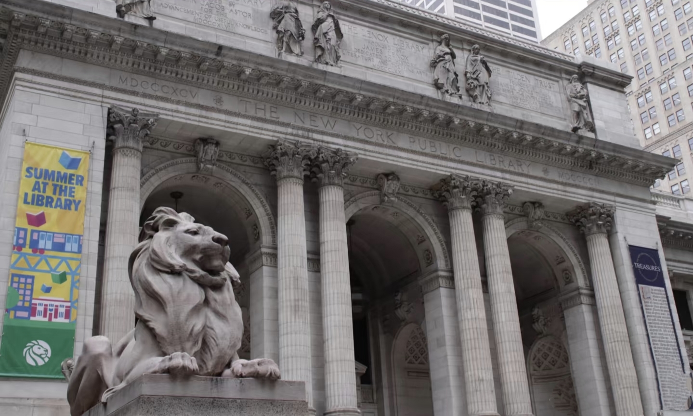
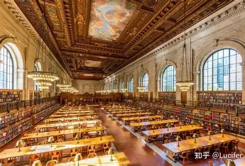
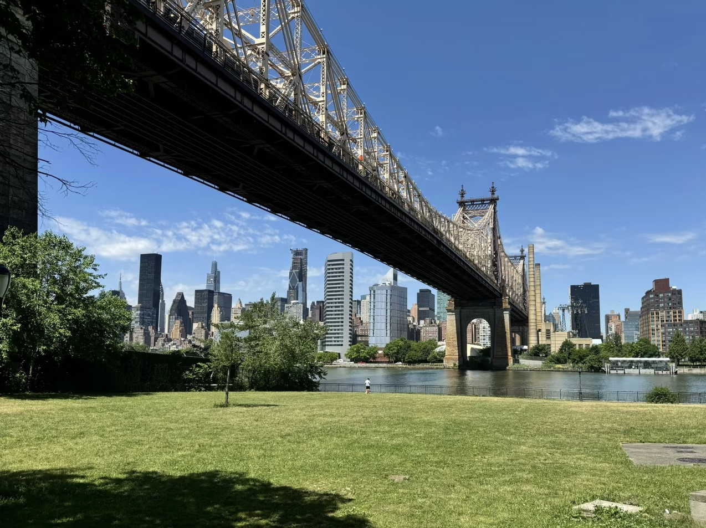
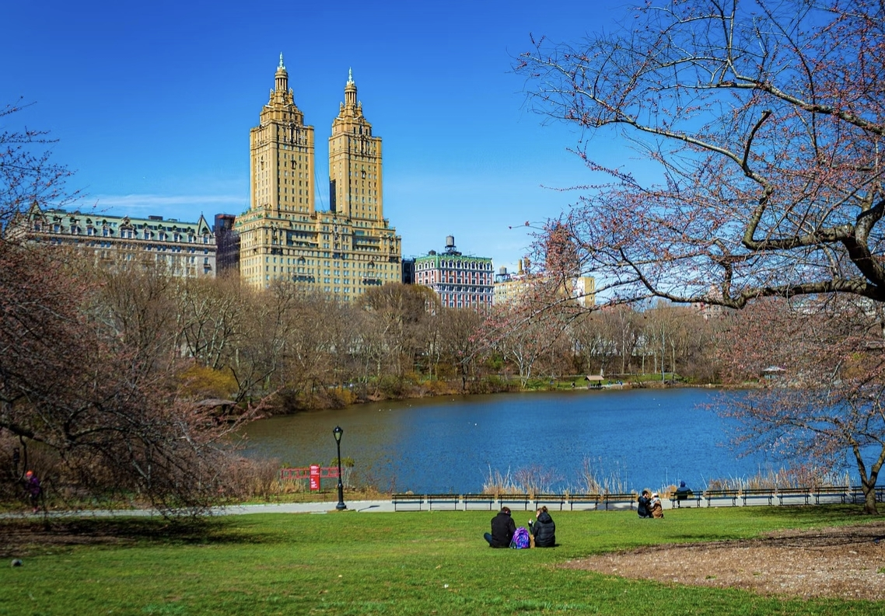
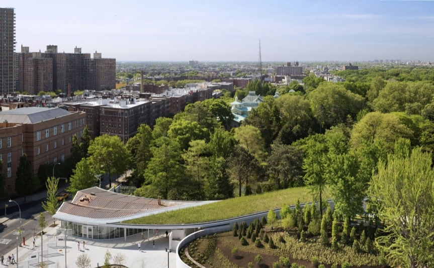
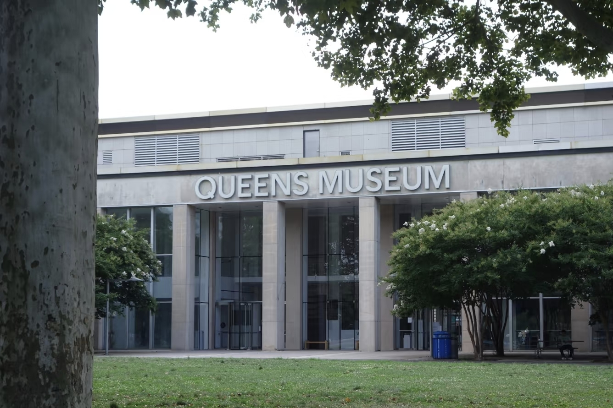
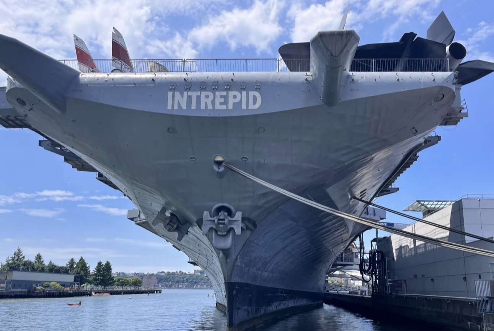

Person of Interest
纽约实景拍摄地点
纽约 - 角色们的战场
《Person of Interest》以纽约市为主要拍摄地，这座城市不仅是故事的背景，更是一个重要的角色。从繁华的曼哈顿中城到历史悠久的布鲁克林，从标志性的地标到隐藏的街角，纽约的每一个角落都见证了Finch、Reese、Root和Shaw的冒险。这些实景拍摄地点不仅为剧集增添了真实感，也让观众有机会通过这些地点重新体验剧中的经典场景。

在地图上查看
大中央车站
89 E 42nd St, New York, NY 10017
第一季 - 第三季
大中央车站是纽约市最著名的地标之一，也是《Person of Interest》中多次出现的重要场景。这座宏伟的火车站以其独特的建筑风格和繁忙的氛围，为剧集增添了纽约特有的都市感。
经典场景
在第一季中，Reese经常在这里监视目标或与Finch会面。最令人印象深刻的是Reese与Finch的多次偶遇，以及在车站内进行的紧张追踪场景。

在地图上查看
纽约公共图书馆
476 5th Ave, New York, NY 10018
第二季 - 第四季
作为纽约的文化地标，纽约公共图书馆在剧中有着特殊的意义。Harold Finch作为一个热爱书籍和知识的人，这个地点与他的性格非常契合。
经典场景
在剧中，Finch经常在这里查阅资料或与他人会面。图书馆安静而庄严的氛围，与Finch低调内敛的性格形成了完美的呼应。

在地图上查看
布鲁克林大桥
Brooklyn Bridge, New York, NY
第一季 - 第五季
布鲁克林大桥是连接曼哈顿和布鲁克林的标志性桥梁，在剧中多次出现，成为了纽约天际线的重要组成部分。
经典场景
大桥出现在多个关键场景中，包括角色们的对话、追逐戏以及一些感人的时刻。特别是在大结局中，大桥作为纽约的象征，见证了团队的最后战斗。

在地图上查看
中央公园
5th Ave & 59th St, New York, NY 10022
第一季 - 第五季
中央公园是纽约市的绿色心脏，在剧中多次出现，为紧张的剧情提供了一个宁静的背景。
经典场景
Finch和Reese经常在公园中散步或会面，这里也是他们放松和交流的地方。此外，公园还出现在一些重要的剧情转折点。

高线公园
New York, NY
第三季 - 第五季
高线公园是建在废弃高架铁路上的线性公园，以其独特的设计和城市景观而闻名。在剧中，这里是一些重要对话和场景的发生地。
经典场景
Root和Shaw曾在这里有过重要的对话，高线公园的现代感和开阔视野为她们复杂的关系提供了一个独特的背景。

在地图上查看
布鲁克林植物园
990 Washington Ave, Brooklyn, NY 11225
第四季
布鲁克林植物园是一个宁静的绿洲，在剧中为一些关键场景提供了一个远离城市喧嚣的背景。
经典场景
在第四季中，这里是Finch与一位重要角色会面的地方，植物园的宁静与剧中紧张的氛围形成了鲜明的对比。

在地图上查看
皇后区博物馆
New York City Building, Flushing Meadows Corona Park, Queens, NY 11368
第三季
皇后区博物馆位于法拉盛草原可乐娜公园内，以其收藏和建筑风格而闻名。在剧中，这里是一个重要的剧情发生地。
经典场景
在第三季的一集中，博物馆内的联合国总部模型成为了一个关键的剧情元素，团队在这里执行了一次重要的任务。

纽约市政厅
City Hall Park, New York, NY 10007
第一季 - 第四季
纽约市政厅是纽约市的政府中心，也是一座历史悠久的建筑。在剧中，这里经常作为政府相关场景的背景。
经典场景
与Carter相关的多个剧情场景在这里拍摄，特别是当她处理与政府和执法部门相关的事务时。

威廉斯堡大桥
Williamsburg Bridge, New York, NY
第二季 - 第五季
威廉斯堡大桥连接曼哈顿下东区和布鲁克林的威廉斯堡，在剧中多次作为纽约天际线的一部分出现。
经典场景
大桥出现在多个追逐场景中，特别是在夜间场景中，大桥的灯光为剧集增添了独特的视觉效果。

在地图上查看
布鲁克林海军造船厂
63 Flushing Ave, Brooklyn, NY 11205
第三季 - 第五季
布鲁克林海军造船厂是一个历史悠久的工业区，现在已转型为创意产业园区。在剧中，这里作为一些秘密行动和紧张场景的背景。
经典场景
在与「Samaritan」对抗的剧情中，这里是团队执行一些高风险任务的地点，造船厂的工业氛围为这些场景增添了紧张感。